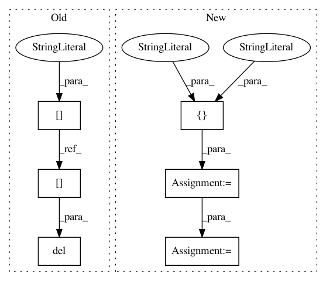

07d2442c2bfe4521b6e88bb63dc484efac9a53e4,cnvlib/tabio/genepred.py,,read_refflat,#Any#Any#Any#,80
Before Change
dframe["end"] = dframe["end_cds"].astype("int")
else:
dframe["start"] = dframe["start"].astype("int") - 1
dframe["end"] = dframe["end"].astype("int")
for key in ("start_cds", "end_cds", "exon_starts", "exon_ends"):
del dframe[key]
// NB: same gene name can appear on alt. contigs
dframe = (dframe.groupby(by=["chromosome", "strand", "gene"],
as_index=False, group_keys=False, sort=False)
.apply(_merge_overlapping))
After Change
cols_shared = ["gene", "accession", "chromosome", "strand"]
if exons:
cols_rest = ["_start_tx", "_end_tx", // Transcription
"_start_cds", "_end_cds", // Coding region
"exon_count", "exon_starts", "exon_ends"]
elif cds:
// Use CDS instead of transcription region
cols_rest = ["_start_tx", "_end_tx",
"start", "end",
"_exon_count", "_exon_starts", "_exon_ends"]
else:
cols_rest = ["start", "end",
"_start_cds", "_end_cds",
"_exon_count", "_exon_starts", "_exon_ends"]
colnames = cols_shared + cols_rest
usecols = [c for c in colnames if not c.startswith("_")]
// Parse the file contents
try:
dframe = pd.read_table(infile, header=None,
In pattern: SUPERPATTERN
Frequency: 3
Non-data size: 6
Instances
Project Name: etal/cnvkit
Commit Name: 07d2442c2bfe4521b6e88bb63dc484efac9a53e4
Time: 2016-10-25
Author: eric.talevich@gmail.com
File Name: cnvlib/tabio/genepred.py
Class Name:
Method Name: read_refflat
Project Name: soft-matter/trackpy
Commit Name: dbeab7509cfec1314b6529d57fbd090ce744695c
Time: 2017-07-27
Author: caspervdw@gmail.com
File Name: trackpy/motion.py
Class Name:
Method Name: compute_drift
Project Name: etal/cnvkit
Commit Name: 07d2442c2bfe4521b6e88bb63dc484efac9a53e4
Time: 2016-10-25
Author: eric.talevich@gmail.com
File Name: cnvlib/tabio/genepred.py
Class Name:
Method Name: read_refflat
Project Name: dmnfarrell/pandastable
Commit Name: 61111647e6874d39af8d48650379e76f54a5bf71
Time: 2014-02-13
Author: farrell.damien@gmail.com@c7c09e87-b3be-f776-313c-63292bcc8aec
File Name: plotting.py
Class Name: PlotFrame
Method Name: redraw